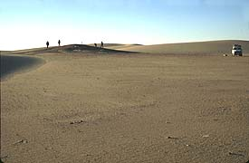
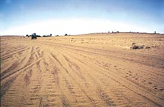
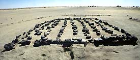

|
Dongola:
Survey and Excavation in the Sudanese Nile
Compared
with Egypt archaeology in Sudan is still in its infancy. Although Sudan's
archaeological heritage rivals that of its northern neighbour it boasts
few of the grandiose and extremely well preserved monuments such as those
constructed by the pharaohs of ancient Egypt. Today there is increasing
interest in Sudan and its pivotal role as the zone of contact between
the civilisations of the Mediterranean Basin and the Levant and those
of Central Africa is attracting considerable attention.
The
Northern Dongola Reach Survey
Any map of the Nile
Valley in Egypt will show an unbroken chain of ancient settlements along
the whole length of the valley from the First Cataract to the Delta. By
contrast archaeological maps of the Sudanese Nile valley show a number
of large areas devoid of settlement. Prior to the 1990s one such area
was on the east bank of the river in the Northern
Dongola Reach 500km north of Khartoum where, for a distance of approximately
80km, only the site of Kawa was known. It is increasingly becoming clear
that a gap in the distribution of archaeological sites reflects, not an
absence of ancient settlement but an absence of archaeological work. In
1993 the Sudan Archaeological Research Society obtained a concession from
the Sudan National Corporation for Antiquities and Museums to undertake
survey on the east bank of the Nile in the Northern Dongola Reach between
Mulwad and Eimani, from the river eastwards to the edge of the desert
plateau, a maximum distance of 18km. To the south a similar survey had
been conducted in the 1980s by the Royal Ontario Museum, Toronto, while
to the north the Section Française de la Direction des Antiquités
of the National Corporation for Antiquities and Museums has been surveying
and excavating for many years.
The SARS
project rapidly filled the gap on the distribution map with the location,
over a five year period, of 450 sites. Although some of these were little
more that occupation scatters approximately 50 substantial cemeteries
of the later Neolithic period (c. 5500 - 3500 BC) were recorded
(see picture 1) and 150 rural settlements of the Kerma period (c.
2500 - 1500 BC) (see picture 2). What proved to be the most exciting discovery
was illustrated by the distribution of the sites over time. In the Neolithic
sites were widely distributed across the alluvial plain, being located
not only close to the banks of the present river but well to the east
up to the edge of the plateau.
|
During this
period we know from work elsewhere in the Sudanese Nile Valley and
in the Eastern Sahara that the climate was considerably wetter than
at present allowing settlement away from the river. The population
was presumably reliant on a mixed economy with hunting, fishing,
agriculture and animal husbandry all playing a part. In the last
few millennia BC the climate deteriorated approaching the present
hyper-arid conditions during the 1st millennium BC.
|

| 1.
A Neolithic cemetery at Site L21. |
|
|
By
around 2500 BC a major political centre developed at Kerma 35km
to the north of the SARS concession. This, the capital of the Kingdom
of Kush, rose to rival the power of Egypt and ultimately posed such
a threat to the pharaohs as to necessitate its conquest around 1500
BC. The Kerma period, as it is called by archaeologists, appears
to have been the most productive time in the Northern Dongola Reach.
The needs of the large metropolis, the capital of a kingdom which
in its heyday stretched from the Fourth to the First Cataracts,
will have served to stimulate the local economy to produce a surplus
which would either have been marketed or have been drawn off as
tax in kind to Kerma. The 150 settlements are a physical testimony
to this intensive utilisation of the region. Unlike in the Neolithic
these sites are confined to the banks of the present day Nile and
to the banks of a number of palaeochannels - old river channels
- some running well to the east of the Nile. In places these palaeochannels
are extremely well preserved with the river bed approximately 70m
wide and 2m deep clearly visible and lined on both banks with the
large and prominent settlement mounds. The SARS project was one
of survey, recording surface features in most cases, and therefore
details of the layout of these settlements were rarely visible.
|

| 2.
Kerma period settlements along the Seleim Nile palaeochannel.
|
|
|
However a small
number of mud-brick buildings were noted and many structures of
a highly unusual, and at that time totally unknown type. These structures
were rectangular, up to 11m square, and were characterised by an
internal arrangement of stone `post-pads, set approximately 1m apart
(see picture 3). These are too close together to have been needed
to support timber posts to hold up the roof and it was suggested
that they supported a raised timber floor. For the safe storage
of foodstuffs in northern Sudan it is essential to protect against
termites, rodents and from damp. A number of ethnographic parallels
for raising the storage facility of the ground on wooden posts are
still to be seen in Sudan and one is forcibly reminded of the provision
of raised floors in store buildings/granaries belonging to other
cultures particularly granaries in Roman forts. One problem with
this interpretation appeared to be the difficulty of procuring the
large quantities of timber necessary to produce this raised floor
in this arid landscape. However, as already noted the climate was
probably considerable wetter during the Kerma period and recent
excavations by the University of Charles de Gaulle III, Lille at
the nearby site of Gism el-Arba, Settlement 2, directed by Brigitte
Gratien, has found similar buildings with the remains of the timber
floors still preserved.
|

| 3.
The store building/granary at Site P4. |
|
The
conquest of the Northern Dongola Reach by the pharaohs of the Egyptian
18th Dynasty was not the only disaster to befall the region
in the later 2nd and 1st millennia BC. The increasingly
arid climate along with the drying up of the palaeochannels brought about
a fundamental change in the utilisation of the region. Faced with the
increasingly inhospitable conditions the number of settlements decreased
drastically and attempts were made, through the large scale digging of
wells to maintain a presence away from the river. We can envisage the
abandonment of agriculture and permanent settlements with a change over
to a transhuming or nomadic existence based on animal husbandry which
itself became untenable as the Sahara swept over the region. Thereafter,
until the recent past all settlement in the Northern Dongola Reach has
been confined to the banks of the Nile.
|
|